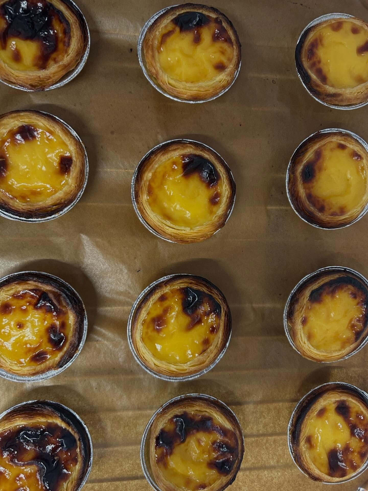
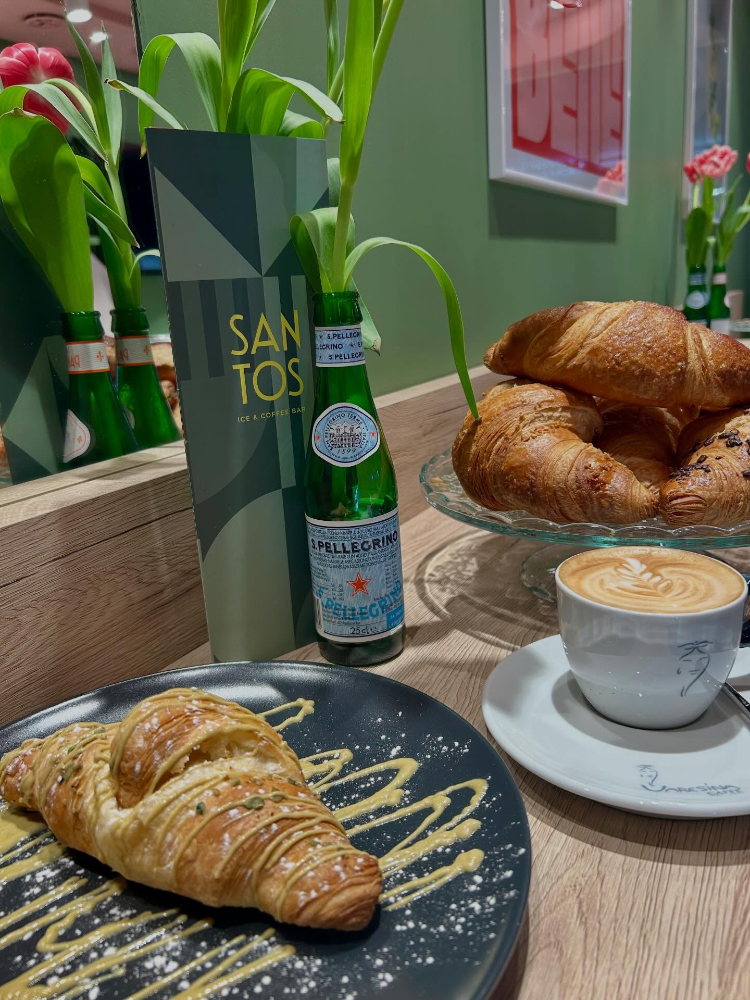
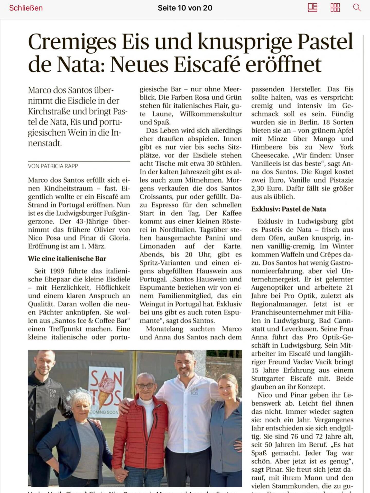

{kind=link}
{kind=link}
Kaffee
Sauber extrahierter Espresso, cremiger Cappuccino und eine Theke, die nach echter Tagesroutine statt nach Kette wirkt.
Neu eröffnet in Ludwigsburg
Ein neuer Treffpunkt für Cappuccino am Vormittag, Kugel-Eis am Nachmittag, Pastel de Nata zwischendurch und Spritz zum Abend.
Jetzt neu
Santos ICE & COFFEE BAR ist neu in Ludwigsburg und verbindet Café, Eistheke und lockere Bar-Atmosphäre in einer klaren Adresse.
Das Konzept
Sauber extrahierter Espresso, cremiger Cappuccino und eine Theke, die nach echter Tagesroutine statt nach Kette wirkt.
Kugelweise serviert, frisch präsentiert und sichtbar Teil der Identität statt bloße Ergänzung.
Wenn der Tag kippt, übernimmt der Spritz. Leicht, urban und passend für einen Zwischenstopp in der Innenstadt.
Bilder aus dem Laden




Highlights
Blättrig, karamellisiert und genau richtig zu einem kurzen Espresso.
Cremig, ruhig und ohne unnötige Show. Der Klassiker bleibt der Maßstab.
Kugelweise serviert, spontan gewählt und als kleine Pause in der Stadt gedacht.
Für den späteren Nachmittag: leichte Drinks, Thekenatmosphäre und Stadtabend.
Firmenfeier & Events
Ob Firmenfeier, Teamabend, kleine Geburtstagsrunde oder lockerer Empfang: Über das Formular lässt sich eine Anfrage direkt mit allen wichtigen Angaben vorbereiten.
Nach dem Absenden öffnet sich eine vorbereitete E-Mail mit allen Formulardaten. So kann die Anfrage direkt verschickt oder vor dem Versand noch angepasst werden.
Presse & Aufmerksamkeit

Für eine Neueröffnung ist Sichtbarkeit entscheidend. Die Kombination aus klarer Adresse, starkem Social-Auftritt und Pressefoto hilft, lokal schneller gefunden und erinnert zu werden.
Genau deshalb ist die Seite nun auf lokale Suchbegriffe wie "Café Ludwigsburg", "Eis Ludwigsburg" und "neu eröffnet Ludwigsburg" ausgerichtet.
Besuch
Kirchstraße 18
71634 Ludwigsburg
Kaffee am Vormittag, Eis am Nachmittag und Spritz am Abend.
Instagram: @santos_iceandcoffeebar
{kind=link}
{kind=link}
{kind=link}